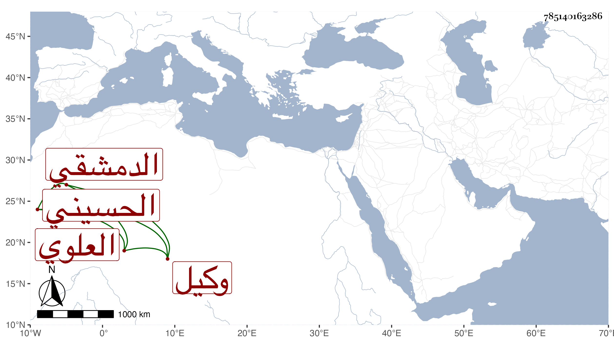

0902Sakhawi.DawLamic.ITO20230111-ara1.EIS1600.785140163286
Biography ID: 785140163286
125
أحمد بن علي بن يحيى بن تميم بن حبيب بن جعفر بن محمد بن علي ابن القسم بن الحسن الشهاب الحسيني العلوي الدمشقي وكيل بيت المال بها . ولد سنة سبع عشرة وسبعمائة وسمع من الحجار وابن تيمية والمزي وغيرهم الكثير ، وولي وكالة بيت المال ونظر المرستان النوري ونظر الأحباس ونظر الأوصياء فشكر في مباشراته وكان تيدمر يعظمه ويقدمه ثم ترك المباشرة وانقطع ببيته وكان الشريف ناصر الدين بن عدنان يطعن في نسبه ، قال شيخنا لكني رأيت بخط السبكي نسبته حسينيا ، وقد حدث بالكثير سمع منه الفضلاء قرأ عليه شيخنا أشياء وذكره في معجمه وأنبائه وقال إنه مات وقد تغير قليلا من الهرم في رابع ربيع الآخر سنة ثلاث وله سبع وثمانون سنة واستراح من رعب الكائنة العظمى . وهو في عقود المقريزي باختصار .
